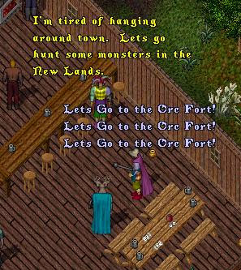
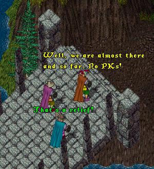
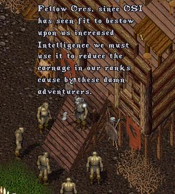
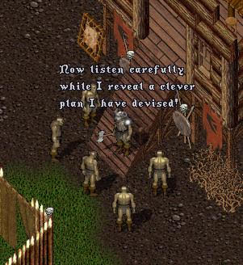
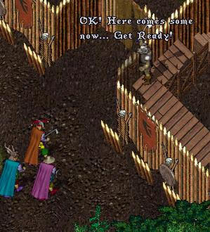
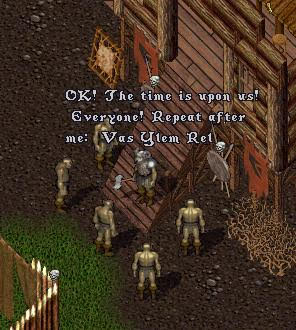
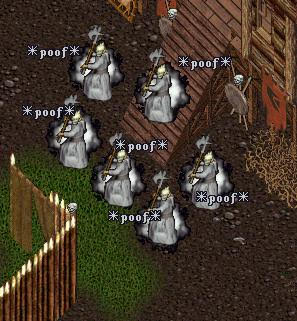
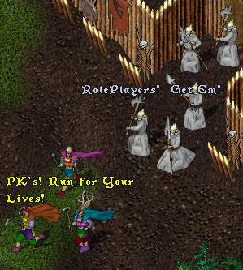
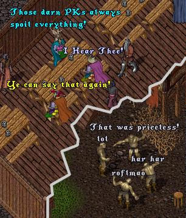

Episode 95: In this episode ImaNewbie falls victim to another of OSI's promised upcoming changes to UO, "Improved Monster Artificial Intelligence".
As this episode opens, we find ImaNewbie
and a couple of the other L.O.S.E.R.S. guild
members, feeling kind of bored and deciding
on an adventure in the New Lands.

Soon the three adventurers find themselves
in the New Lands, north of Delucia, heading
for the Orc Fort.

Meanwhile, at the Orc Fort, the Orcs are
having a meeting to discuss how best to use
their newly gained "Improved Intelligence"!


Hrmm, very interesting, wonder what they
have planned? But wait! An Orc sentry
posted by the gates spies our intrepid
threesome approaching the Fort.




Later that afternoon, back at the tavern
(and the Orc Fort)...
